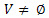

Un grafo G es una pareja de conjuntos G=(V,E) donde:
 es el llamado conjunto de vértices o nodosE = conjunto de pares no ordenados de elementos de E ( conjunto de aristas )
Sea G un grafo no dirigido. Si (u,v) es una arista se dice que:
E = conjunto de pares ordenados de elementos de E (conjunto de arcos)
Sea G un grafo dirigido. Si (u,v) es un arco se dice que:
Decimos que un grafo es simple si no posee bucles
Un grafo H=(V(H),E(H)) se dice que es subgrafo de G=(V(G),E(G)), si V(H) es subconjunto de V(G) y E(H) lo es de E(G).
Se dice que H es subgrafo generador de G si V(H)=V(G).
Dado G=(V,E), llamamos subgrafo inducido por un conjunto de vértices V' al subgrafo de G cuyo conjunto de vértices es V' y es maximal respecto al conjunto de aristas (arcos)
Grado de un vértice [grafo no dirigido]:
En un grafo no dirigido se llama grado de un vértice v, se denota d(v), al número de aristas incidentes en él (teniendo en cuenta que si en v hay un bucle éste añade 2 unidades al cómputo total del grado de v).
Grado de entrada/salida de un vértice [grafo dirigido]:
Si el grafo es dirigido distinguiremos entre grado de entrada de v, de(v), número de arcos que tienen por extremo final v y grado de salida de v, ds(v), número de arcos que tienen por extremo inicial v.
Grafo subyacente:
El grafo subyacente de un grafo dirigido G, es el grafo no dirigido obtenido al sustituir todo arco (u,v) por una arista (u,v).